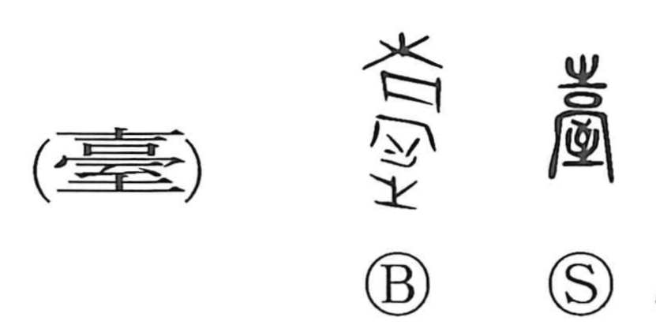

Explanation
The original graph 臺 combines an abbreviated form of 高 “high” with 至, the sign of an arrow’s arrival. In ancient rites, a sacred arrow was shot to mark the auspicious spot for important construction, so 臺 names a lofty structure raised on such a divinely selected site—a vantage tower or utena. From this core sense it came to mean a stand or platform for setting things, and by extension a public office. Some old forms even depict a tree set upon the rooftop, like a landmark tree, signaling a stately, sacred mansion where the gods approach. Famous examples include the Deer Terrace (鹿台) of the last Shang king and the Zhanghua Terrace (章華台) of Chu, celebrated as magnificent elevated mansions. The widely used simplified graph 台 was originally a different character and did not itself denote a building.